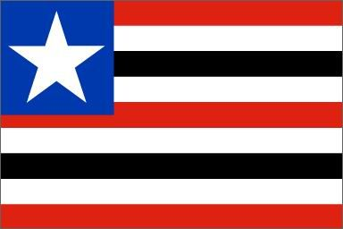

Maranhão
Maranhão, estado no nordeste brasileiro, é formado em parte pela Floresta Amazônica e pelas praias ao longo do Oceano Atlântico. Próximo à cidade de Barreirinhas, grandes dunas de areia branca criam paisagens que lembram um deserto no Parque Nacional Lençóis Maranhenses, onde lagoas de água fresca nas quais se pode nadar se formam durante a temporada de chuvas. É na capital, São Luís, que se encontra o agitado bairro histórico conhecido como Reviver.

O território atual do estado do Maranhão foi objeto de disputa entre diversos povos europeus, como portugueses, espanhóis, franceses e até mesmo holandeses. O primeiro registro de ocupação europeia no estado data de 1500, por meio da chegada de desbravadores da Espanha. No entanto, apenas em 1612 o primeiro núcleo urbano foi consolidado, por meio da ocupação francesa, que fundou a atual capital do estado, São Luís.
No mesmo período, a ocupação portuguesa avançava no território brasileiro. Dessa maneira, em 1615, Portugal ocupou de forma efetiva a região do Maranhão, por meio da expulsão de invasores estrangeiros. Em 1621, foi criado pelos portugueses o estado do Maranhão.
principal objetivo da instalação dessa capitania era estabelecer o maior domínio português na região e, em especial, evitar novas invasões estrangeiras. Mesmo assim, em 1641, forças dos Países Baixos invadiram a capital, São Luís, invasão que foi sufocada pelas forças portuguesas. Por meio de acordos entre Portugal e Países Baixos, a questão foi superada.
Em 1654 foi criado o estado do Maranhão e Grão-Pará, que compendia, além do território do Maranhão, uma vasta área do atual estado do Pará. A separação entre ambos os estados foi concretizada apenas em 1772.
O século XIX foi marcado pela expansão urbana e econômica do Maranhão. O estado se consolidou como um importante centro político e cultural do meio-norte do Brasil, em especial a sua capital, São Luís, que ainda possui um importante centro histórico que preserva resquícios arquitetônicos desse período.
Na agricultura, o estado se destacou na produção de cana-de-açúcar e de algodão. Entretanto, com as mudanças econômicas e políticas do Brasil no final do século XIX, o Maranhão vivenciou um longo período de estagnação da economia e de aumento da vulnerabilidade social. Na atualidade, apesar dos avanços sociais da última década, é considerado um dos estados mais pobres do Brasil.
Capital: São Luís
Governador: Carlos Orleans Brandão Júnior
População: 6,777 milhões (2022)
Clima: tropical Af/Aw
Cód. ISO 3166-2: BR-MA
Economia: 2022
Fuso horário: UTC−3, America/Fortaleza
O Maranhão possui uma cultura muito rica e diversificada marcada pela influência dos povos formadores do estado. A arquitetura, em especial nas cidades de Alcântara e São Luís, possui grande riqueza histórica. Os adornos com azulejos portugueses são característicos dos edifícios históricos maranhenses. A influência portuguesa também é perceptível nas festas e manifestações folclóricas, como as festas religiosas. A Festa do Divino é muito tradicional em várias cidades maranhenses, assim como os festejos juninos e do boi-bumbá.
O estado também cultiva gêneros musicais diversos, com destaque para o reggae. O artesanato maranhense utiliza as folhas e os frutos das palmeiras, que são abundantes no estado. Na culinária, são empregados alimentos como frutos do mar, temperos diversos, mandioca e juçara, conhecida também como açaí.